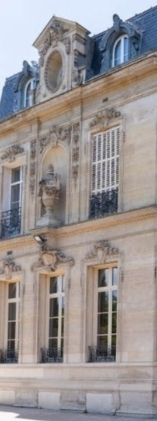
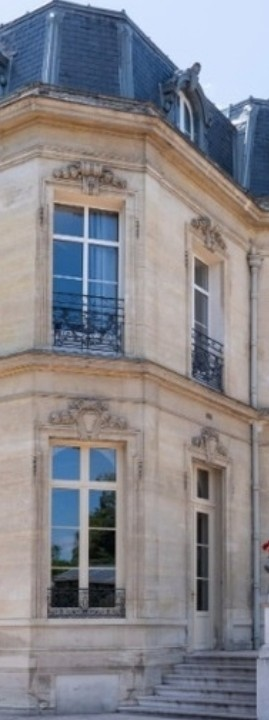

Édito À lire avant de commencer
Ta carte de presse se gagne module après module
Bienvenue au Club Jeune Reporter ! Ici, tu apprends le métier de journaliste à ton rythme, seul au CDI.
Chaque module dure environ 45 minutes. Lis, observe, réponds : chaque réponse est expliquée, alors prends le temps de lire les explications. Fais les modules dans l’ordre, du 1 au 9. À la fin de chacun, tu gagnes un badge et un tampon sur ta carte de presse.
Pour commencerOuvre le module 1Mon bilan Ma sauvegarde et mon rapport
Garde une trace de ton travail
Ta progression s’enregistre toute seule dans ce navigateur, sur cet ordinateur. Tu peux t’arrêter au milieu d’un module : il rouvrira là où tu en étais.
- À la fin de chaque séance, télécharge ton bilan et range-le (ENT, clé USB). C’est ta sauvegarde.
- Sur un autre ordinateur, clique sur « Reprendre avec mon bilan » et choisis ce fichier : tu retrouves ta progression.
- Quand ton professeur le demande, dépose ton dernier bilan là où il te l’indique.
Ne modifie pas le fichier : il porte un sceau. Un bilan retouché est refusé ici et signalé à ton professeur.